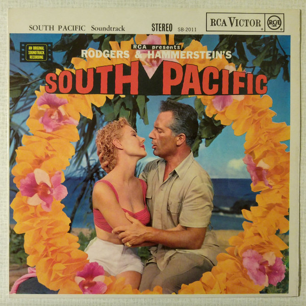

LP
RCA Presents Rodgers & Hammerstein's South Pacific
Rodgers & Hammerstein
Media: — · Sleeve: —
—
Personal
Discogs SuggestedCA$14.37
Discogs MedianCA$14.37
Discogs HighCA$14.37
- Physical Copy ID
- BB-LP-269
- Year
- —
- Label
- RCA Red Seal, RCA Victor
- Catalog #
- SB 2011, SB-2011
- Country
- GBUK
- Genre / Style
- Stage & Screen · Soundtrack, Musical